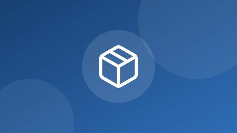

Tous prêts › Checklist du kit d'urgence 72h à imprimer
Checklist du kit d'urgence 72h à imprimer
Imprimez cette page (Ctrl + P, ou Partager › Imprimer sur téléphone) et cochez au fur et à mesure. Pour une liste adaptée à votre foyer, utilisez l'appli.
Informations pratiques, sources officielles (guide « Tous responsables » (SGDSN, 2025)). Elles ne remplacent pas les consignes des autorités. En cas d'urgence, appelez le 112 et suivez les consignes de la préfecture, de la radio et de FR-Alert.
La checklist
Boire et manger
- Eau potable en bouteilles : 6 litres par personne pour 72 heures
- Nourriture non périssable sans cuisson (conserves, petits pots pour bébé, nourriture pour animaux)
- Couteau multifonction et ouvre-boîte
- En dernier recours : pastilles de désinfection de l'eau
Avoir chaud et s'éclairer
- Vêtements chauds et couverture de survie
- Lampe de poche et piles de rechange
- Briquet ou allumettes ; bougies jamais sans surveillance
Se soigner
- Trousse de premiers secours (pansements, compresses, désinfectant)
- Médicaments personnels et ordonnances
- Paire de lunettes de secours
S'informer et rester joignable
- Radio à piles et piles de rechange
- Chargeur de téléphone
- Les numéros d'urgence : 15, 17, 18, 112 et 114 par SMS
Papiers, argent et clés
- Argent liquide
- Photocopies des papiers importants dans une pochette étanche
- Double des clés de la maison et de la voiture
- De quoi occuper les enfants (jeux, livres)
Entretien du kit
Deux fois par an
- Vérifier les dates de péremption
- Tester et remplacer les piles
- Compléter après chaque utilisation
- Tout le foyer sait où est le kit
À lire aussi
 Kit de survie 72 h : la listeListe complète du kit d’urgence 72h du gouvernement : eau, nourriture, radio, trousse… Version claire + checklist interactive gratuite adaptée à votre foyer.
Kit de survie 72 h : la listeListe complète du kit d’urgence 72h du gouvernement : eau, nourriture, radio, trousse… Version claire + checklist interactive gratuite adaptée à votre foyer.
Que mettre dans un kit d'urgenceQue mettre dans un kit d’urgence pour tenir 72 heures : eau, nourriture, lumière, radio, soins, papiers. Liste claire tirée du guide officiel + checklist gratuite. Combien d'eau stockerLe guide officiel demande 6 litres d'eau par personne pour 72 heures, soit 2 litres par jour. Tableau par taille de foyer, stockage et renouvellement.
Combien d'eau stockerLe guide officiel demande 6 litres d'eau par personne pour 72 heures, soit 2 litres par jour. Tableau par taille de foyer, stockage et renouvellement.